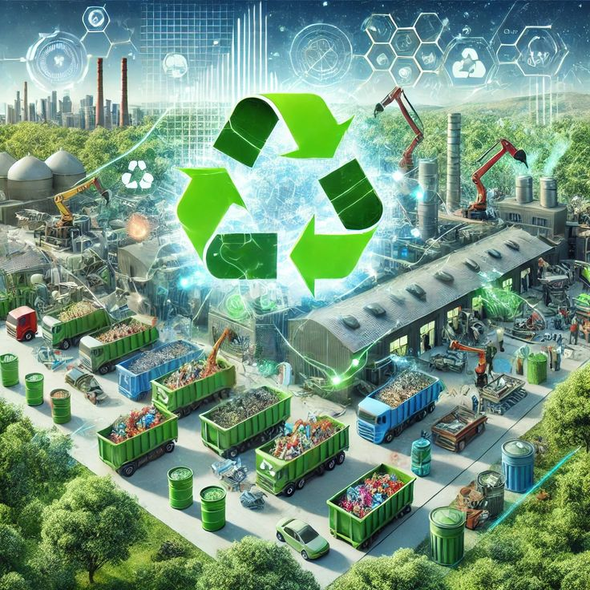

E-WASTE MANAGEMENT PRACTICES

E-waste management practices aim to reduce the environmental impact of electronic waste and promote sustainable use of electronic resources. Here are some key practices:
E-waste management practices aim to reduce the environmental impact of electronic waste and promote sustainable use of electronic resources. Here are some key practices:

E-waste recycling is the process of dismantling and processing discarded electronic devices, like old phones, computers, and TVs. The main goals are to safely manage the hazardous components they contain and to recover valuable materials (like metals and plastics) that can be reused in new products, reducing the need for mining and preventing environmental pollution. E-waste contains precious metals like gold, silver, copper, and platinum. The total value of discarded e-waste in 2019 was conservatively estimated at a whopping $57 billion—greater than the GDP of most countries. E-Waste recycling, therefore, aims to recover and make the most of these precious minerals while giving our old devices a new life. E-waste recycling is the process of extracting valuable materials after shredding the e-waste into tiny pieces that could be reused in a new electronic appliance. However, a number of current challenges are preventing the electronic recycling industry from scaling up.
The importance of e-waste management cannot be overstated, given its environmental, economic, and social implications. The electronic waste recycling process is crucial for a number of reasons. Recycling e-waste helps conserve valuable resources, reduce pollution from toxic substances, and contribute to a circular economy. It can also create jobs, generate revenue from recovered materials, and mitigate environmental damage. Proper recycling ensures data security and supports global sustainability goals. Effective e-waste management is vital for protecting the environment and human health. Recycling and reusing e-waste contributes to a cleaner planet and helps mitigate the impacts of climate change. As technology continues to evolve, addressing e-waste is increasingly becoming a key challenge for individuals, businesses, and governments worldwide.
The process includes the following steps.